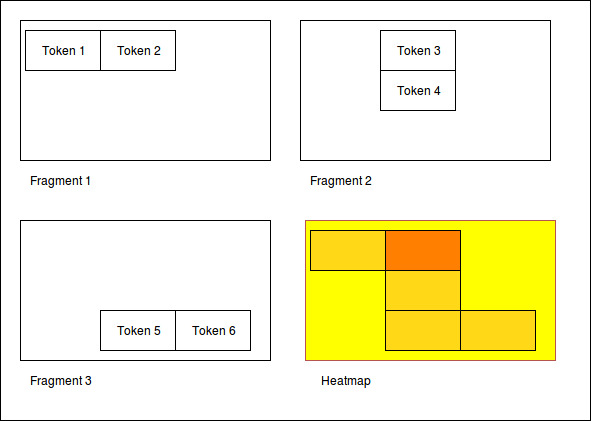

Heatmap¶
The heatmap tool can be used to analyze the positions of tokens. It might be interesting to see the density of tokens in a region or the outline they form. The input for this tool has to be a Cypher query. It will then only work with the tokens, therefore it is recommended to build your query to only return tokens.
Example query:
MATCH (s:Token) RETURN s;
The query is not analyzed or guarded. This means that any code can be executed. As a consequence must this feature kept on a local system and not exposed through a webserver!
The color scheme of the heatmap reaches from 0 (yellow) to 1 (red).
Normalization techniques¶
In this context the term normalization refers to an algorithm that makes the positions of tokens in different images comparable.
There are three types of normalizations present:
Normalization 1: Position in image¶
All images are normalized to the output size. The tokens are scaled accordingly.
The final result is the distribution of tokens over the images.
Normalization 2: Position in scritte (bounding box)¶
This method fetches the Bounding Box(see below) of every image and scales the tokens according to it.
The bounding box is the rectangle spanned by the lowest coordinate to the highest one.
The result shows the distribution of tokens within the bounding box.

Normalization 3: Bounding box centered¶
Here the bounding box is placed into the normalised image. But the position is changed: The box’s center is placed over the normalisation target center.
As a result, the bounding boxes and by that way the outlines of all scritte are comparable.
This method could be used to extract the outline of fragments. Example: Do they have a horizontal orientation or are they grouped like a triangle.

Performance¶
The heatmap creation process happens as a stream.

Processing every single token means some computation effort. Especially fetching images/bounding boxes from the database costs resources, in particulary time. The heatmap tool was never designed to be a big data application but rather a medium data application that shall work with up to 3000 images containing 1 fragment containing 100 elements.
Based on this requirement a ram cache was introduced which is not persistent between heatmap generations but could be implemented easily. The cache prevents unnecessary database request.
The performance evaluation has shown that it is possible to generate heatmaps in reasonable time.

The most computation intense normalization took 15 minutes with 300.000 elements. The data points of this chart are:
| Total elements | Normalization #1 [s] | Norm. #2 [s] | Norm. #3 [s] |
|---|---|---|---|
| 1.000 | 1 | 1 | 1 |
| 2.000 | 1 | 1 | 2 |
| 5.000 | 4 | 9 | 7 |
| 10.000 | 9 | 30 | 14 |
| 50.000 | 45 | 156 | 83 |
| 100.000 | 100 | 205 | 163 |
| 300.000 | 550 | 989 | 701 |
The performance test took place on regular Ubuntu 16.04 with 64 bit on a laptop with Intel® Core™ i5-2520M CPU @ 2.50GHz × 4, and 3,7 GiB RAM and a HDD.